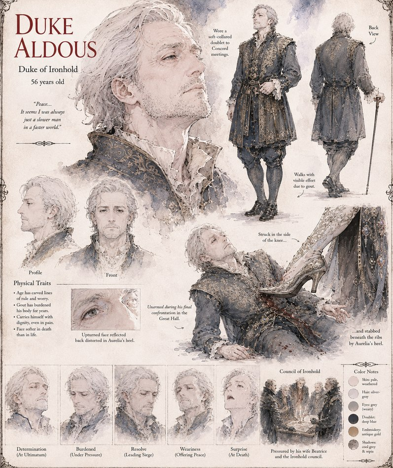

Aldous
Duke of Ironhold · 56 years old · husband to Beatrice
Duke of Ironhold, slowed by gout and by a war he's counseled against from the start. Pressed toward escalation by his wife Beatrice and his own council, he goes into the war's final confrontation in the Great Hall unarmed and offering terms — and is killed there, struck down by the same heels that started the whole conflict.
“Peace... It seems I was always just a slower man in a faster world.”